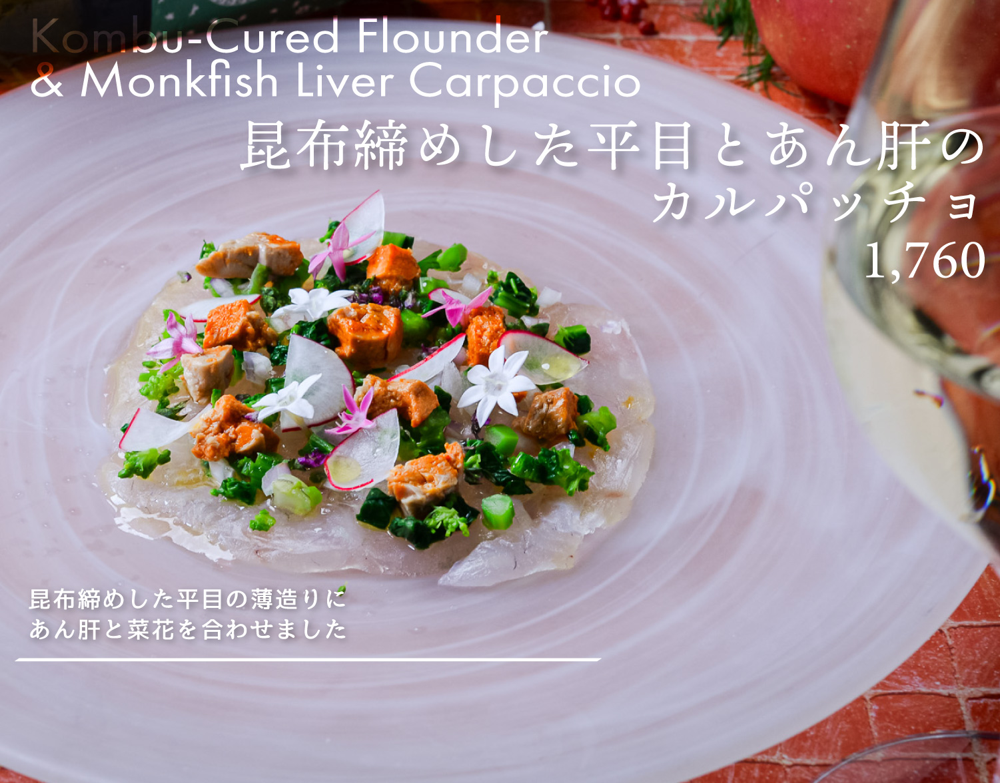

01
2026 WINTER
昆布締めしたヒラメとあん肝のカルパッチョ
¥1,760 税込
- 大豆
一言サービス
「昆布で旨味を引き出したヒラメに、濃厚なあん肝を合わせています。上に添えた菜の花も一緒にお召し上がりください。」
- 提供備品
- トング
- 商品知識
- 昆布締めしたヒラメの薄造りに、あん肝と菜花を合わせた和をイメージしたカルパッチョ。
あん肝は醤油とみりんを使ったカエシで味付けしています。 - 用語解説
- 昆布締め
- 昆布で食材を挟み、余分な水分を抜きながら昆布の旨味を移す調理技法
- あん肝
- アンコウの肝臓。濃厚な旨味とクリーミーな食感から「海のフォアグラ」とも呼ばれる
- カエシ
- 醤油・みりんなどを合わせた調味液。今回はあん肝の味付けに使用
ワインペアリング
ヴァイングート・シュヴァルツベック リースリング
爽やかな酸味があん肝の濃厚さを引き締め、ヒラメの繊細な旨味を引き立てます。